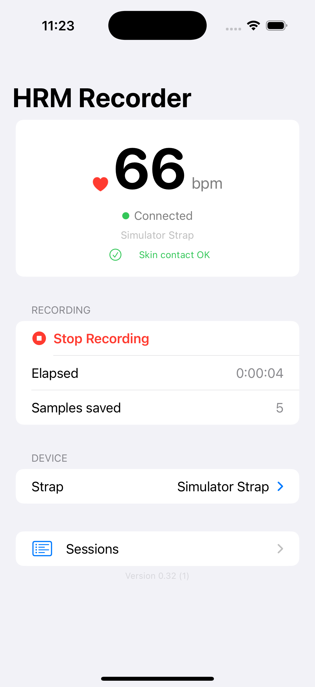
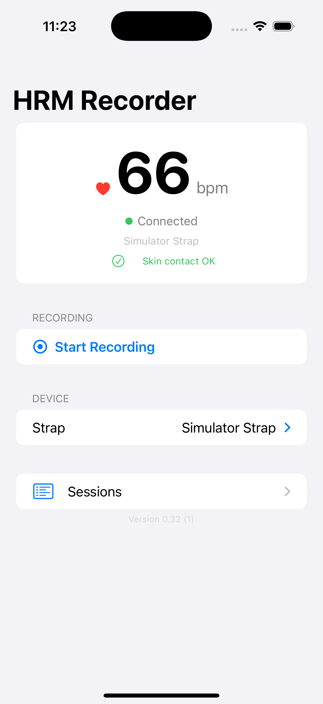
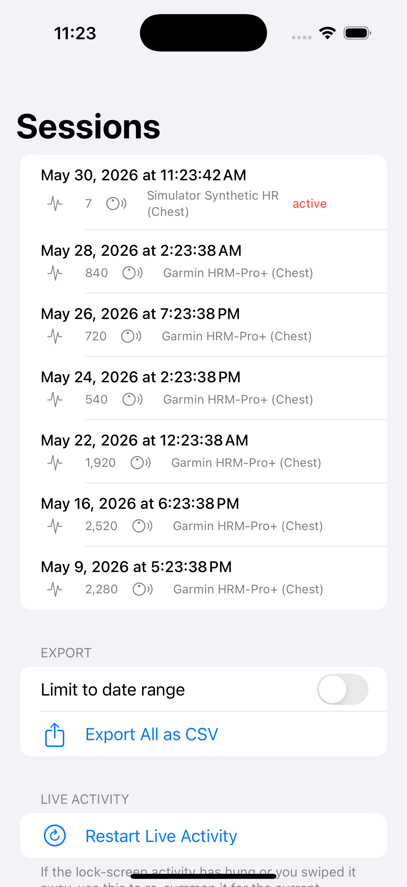
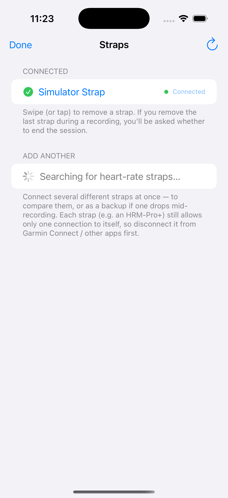

Pair a Bluetooth heart-rate strap. Record every beat to your iPhone in real time. Export to CSV. No accounts, no cloud, no third-party SDKs.
Free · Open source · Requires a BLE heart-rate strap

HRM Recorder isn't a fitness app. It doesn't track workouts, give you scores, or nag you. It records heart data, faithfully and continuously, for the people who actually need that.
Resting heart rate over months. How your sleep affects your morning HR. The slow climb you noticed after a viral illness. Your data, sampled continuously, in a format you can actually look at.
R-R intervals out of the box, sample-level. Feed them into your HRV tool of choice — Kubios, custom scripts, whatever you trust. No summary-only black box. No watch-vendor lock-in.
Captures the spikes and the slow drifts that show up between Holter monitors and clinic visits. Long-form data your doctor can actually look at — without strapping electrodes to your chest for 48 hours.
The app does two things: record heart rate, and let you export it. Every feature below exists to make one of those two things more reliable.
Works with any sensor exposing the standard Heart Rate Service. Garmin HRM-Pro+, Polar H10, Wahoo TICKR, COROS, and more.
Every R-R interval the strap reports is written to your database — the data HRV analysis actually needs.
Keeps recording with the screen off and the app backgrounded. If iOS suspends the app, it resumes the session when your strap reconnects.
Glance at live BPM from your Lock Screen and Dynamic Island, no need to open the app.
Swap straps mid-session, or record from two at once. Each sample is attributed to the strap that produced it.
One row per heartbeat, with timestamp, BPM, R-R intervals, sensor identity. RFC-4180 quoted. Opens cleanly in Excel, Numbers, pandas, anything.
Data lives in a single SQLite file in the app sandbox. WAL mode for durable real-time writes. Schema is published — bring your own tools.
Shows your strap's battery level and warns when it's running low — so you don't lose hours of data to a flat coin cell.
Want a backup? Point it at your own server. No service to sign up for; no third party between you and your data.
No marketing dashboards or motivational rings. Just the heart rate, the strap, the session, the export. (Screenshots taken in the iOS Simulator with synthetic data.)



I built this because I have dysautonomia and I wanted hard heart-rate data between cardiology appointments — without taping a Holter to my chest for 48 hours every time. Then I realized: a lot of people probably want this.
No tracking. No analytics. No third-party SDKs. The app needs Bluetooth permission and nothing else. Data leaves your phone only when you explicitly export it. Read the full privacy policy.
If yours isn't here, email hello@example.com.
0x180D). That includes Garmin HRM-Pro+, Polar H10
and H9, Wahoo TICKR family, COROS HR monitors, and most modern chest
straps. Optical arm bands that speak BLE HR (like the Polar OH1 /
Verity Sense) also work. Apple Watch and other watches are not
supported — the strap connects directly to your iPhone.
rr_ms column has every
R-R interval the strap reported, in milliseconds, semicolon-joined
per packet. Drop that into Kubios, the
hrv-analysis Python package, your own R notebook,
whatever you trust. The app stores the raw data; HRV math is up to
you and your tools.